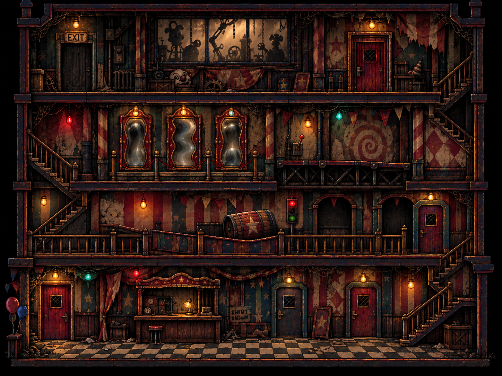
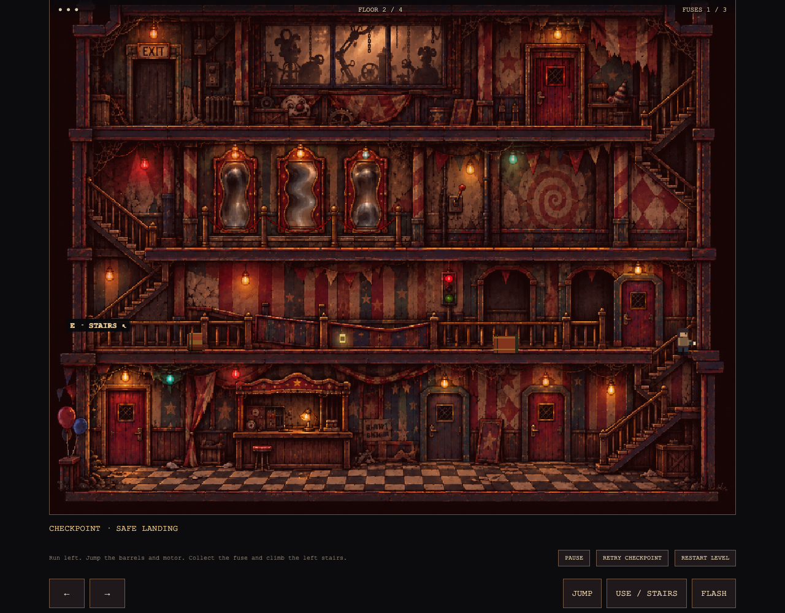

The painted layout is retained. The barrel and machinery now use separate procedural 3D geometry; jumping, solid obstacles, moving platforms, a swinging press, fuses, checkpoints and a final shadow pursuit provide an actual route through it. Character art is temporary. This is a fixed-camera side-view hybrid, with illustrated background scenery.
Validation: 50 model tests, desktop/touch control checks and a full keyboard escape across all four floors. Official 404 geometry checks: 6/6 clean. This preview is local and ends at the upper exit.